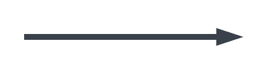
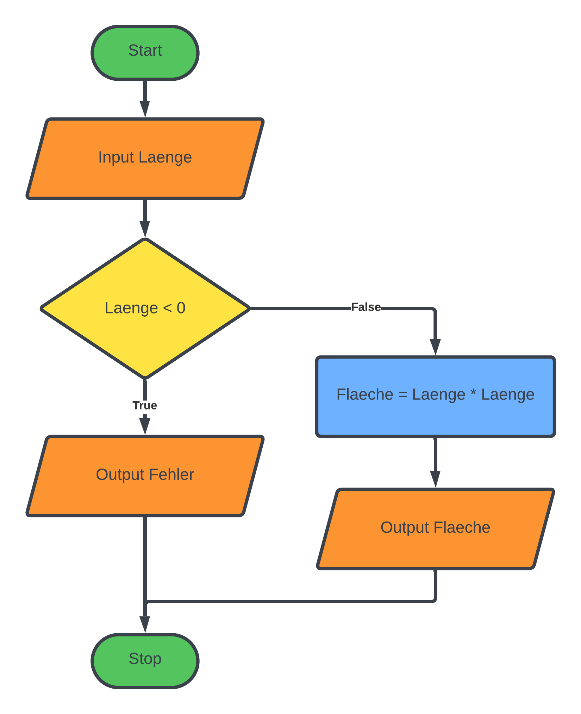

Grafische Darstellung von Programmen
Programme werden durch den Programmcode vollständig definiert. Es ist aber auch möglich Programme grafisch darzustellen. In dieser Darstellung können Programme oft einfacher verstanden werden. Des Weiteren ist es auch für "Nicht-Programmierer" möglich ein Programm zu verstehen.
Flussdiagramme
Zur Darstellung von einfachen Programmen verwenden wir Flussdiagramme (engl. Flowcharts). In den folgenden Abbildungen siehst du die Symbole aus denen Flussdiagramme bestehen und einige Beispiele für komplette Flussdiagramme.
Start / Stop
 Dieses Symbol zeigt den Start und das Ende des Programms.
Dieses Symbol zeigt den Start und das Ende des Programms.
Operation (Tätigkeit)
 Beschreibt eine Operation, wie eine Berechnung,
oder eine Wertzuweisung zu einer Variable.
Beschreibt eine Operation, wie eine Berechnung,
oder eine Wertzuweisung zu einer Variable.
Eingabe / Ausgabe
 Beschreibt das Einlesen von Werten vom Benutzer oder die
Ausgabe von Werten. Dieses Symbol entspricht den Funktionen
Beschreibt das Einlesen von Werten vom Benutzer oder die
Ausgabe von Werten. Dieses Symbol entspricht den Funktionen input bzw. print.
Verzweigung
 Dieses Symbol repräsentiert die
Dieses Symbol repräsentiert die if-Verzweigung.
Es enhält eine Bedingung und zwei Ausgänge.
Je nachdem, ob die Bedingung erfüllt ist, wird entweder
zum einen Ausgang oder zum anderen verzweigt.
Pfeil
 Der Pfeil verbindet die Symbole untereinander.
💡 Beispiele
Passworteingabe
In diesem Beispiel soll der Benutzer eine Geheimnummer eingeben. Die Geheimnummer ist 1735.
Falls die Eingabe richtig ist, soll das Programm: "Okay!" ausgeben. Falls die Nummer falsch ist, soll das Programm: "ACCESS DENIED!" ausgeben.

Rabatt ab 1000€
In diesem Beispiel soll ein Rabatt von 150€ gewährt werden, falls der Einkaufswert mehr als 1000€ beträgt.

Flächenberechnung Quadrat
In diesem Beispiel der Benutzer nach der Seitenlänge eines
Quadrats gefragt werden. Falls die Seite kleiner als 0 ist,
so soll eine Fehlermeldung ausgegeben werden.
Ist die Seite größer oder gleich 0, soll die Fläche berechnet
werden und danach ausgegeben werden.
